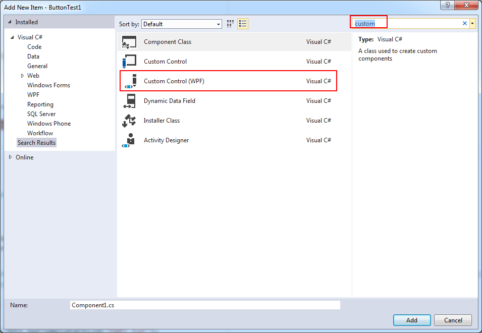
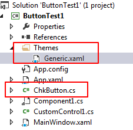

前言
依赖项属性是WPF引入的一个新特性，它扩展了普通的CLR属性。同时依赖项属性有以下优点：减少内存占用，值继承，自动通知等。
依赖项属性与普通CLR属性区别和优点
它与CLR属性的区别是：
- CLR属性是类中的一个成员，可以直接读取，而依赖项属性要通过GetValue() 方法动态取得
- 当你设置CLR属性时，CLR属性存储在对象的field中。依赖项属性必须声明为public static readonly，存储在基类DependencyObject中的Dictionary中。
依赖项属性带来的好处如下：
减少内存占用
It’s a huge dissipation to store a field for each property when you think that over 90% of the properties of a UI control typically stay at its initial values. Dependency properties solve these problems by only store modified properties in the instance. The default values are stored once within the dependency property.
值继承
When you access a dependency property the value is resolved by using a value resolution strategy. If no local value is set, the dependency property navigates up the logical tree until it finds a value. When you set the FontSize on the root element it applies to all textblocks below except you override the value.
变化通知
Dependency properties have a built-in change notification mechanism. By registering a callback in the property metadata you get notified, when the value of the property has been changed. This is also used by the databinding.
下面编写一个自定义控件，并给自定义控件加入几个依赖项属性。
例子
在接下来的例子中，我们将自定义一个ChkButton控件，该控件左边是一个TextBlock，右边是一个Checkbox。并且定义两个依赖项属性：IsChecked，ChkVisibility。
创建自定义控件(Custom Control)。

创建成功后会在工程目录下多了一个theme的文件夹，同时在该文件夹内有Generic.xaml。该xaml是一个ResourceDictionary，在AssemblyInfo文件中会加载该xaml资源。

在Generic.xaml中，我们可以定义该Custom Control的ControlTemplate。
1
2
3
4
5
6
7
8
9
10
11
12
13
14
15
16
17
18
19
20
21
22
23
24
25
26
27
28
29
30
31
32
33
34
35<Style TargetType="{x:Type local:ChkButton}">
<Setter Property="Template">
<Setter.Value>
<ControlTemplate TargetType="{x:Type local:ChkButton}">
<Border
Background="{TemplateBinding Background}"
BorderBrush="{TemplateBinding BorderBrush}"
BorderThickness="{TemplateBinding BorderThickness}">
<Grid>
<Grid.ColumnDefinitions>
<ColumnDefinition Width="*" />
<ColumnDefinition Width="auto" />
</Grid.ColumnDefinitions>
<TextBlock
Name="PART_txt"
Margin="3,3"
HorizontalAlignment="Right"
VerticalAlignment="Center"
Text="{TemplateBinding Content}" />
<CheckBox
Name="PART_chk"
Grid.Column="1"
HorizontalAlignment="Center"
VerticalAlignment="Center"
IsChecked="{Binding RelativeSource={RelativeSource TemplatedParent}, Path=IsChecked, Mode=TwoWay}"
Visibility="Collapsed" />
</Grid>
</Border>
</ControlTemplate>
</Setter.Value>
</Setter>
</Style>
- 先在该xaml中引入namespace，如
xmlns:local="clr-namespace:ButtonTest1" - 该ControlTemplate中的Checkbox的IsChecked属性双向绑定与ChkButton的自定义的IsChecked依赖项属性，从而将内部的checkbox的checked属性开放出来。
注意，在这里在IsChecked进行Binding时没有使用TemplateBinding，即没有使用下面的写法：
1
IsChecked="{TemplateBinding IsChecked}"
因为TemplateBind只支持单向绑定，而我们要实现双向绑定，只能通过Binding表达式。参见stackoverflow的这个问题。
- 先在该xaml中引入namespace，如
定义ChkButton的依赖项属性：IsChecked, ChkVisibility。
1
2
3
4
5
6
7
8
9
10
11
12
13
14
15
16
17
18
19
20
21
22
23
24
25
26
27
28
29
30
31
32public static readonly DependencyProperty IsCheckedProperty = DependencyProperty.Register("IsChecked", typeof(Boolean), typeof(ChkButton));
public bool IsChecked
{
get { return (bool)GetValue(IsCheckedProperty); }
set { SetValue(IsCheckedProperty, value); }
}
public static readonly DependencyProperty ChkVisibilityProperty = DependencyProperty.Register("ChkVisibility", typeof(Visibility), typeof(ChkButton),
new PropertyMetadata(Visibility.Collapsed, new PropertyChangedCallback((obj, args) =>
{
var btn = (ChkButton)obj;
btn.ApplyTemplate();
var textblock = (TextBlock)btn.GetTemplateChild("PART_txt");
var checkbox = (CheckBox)btn.GetTemplateChild("PART_chk");
checkbox.Visibility = (Visibility)args.NewValue;
if (checkbox.Visibility == Visibility.Visible)
{
textblock.HorizontalAlignment = HorizontalAlignment.Right;
}
else
{
textblock.HorizontalAlignment = HorizontalAlignment.Center;
}
})));
public Visibility ChkVisibility
{
get { return (Visibility)GetValue(ChkVisibilityProperty); }
set { SetValue(ChkVisibilityProperty, value); }
}- 在ControlTemplate中给每一个Part定义一个名称，这样可以使用GetTemplateChild方法来获取到引用，注意在调用之前，必须先调用控件的ApplyTemplate方法。
我们希望在点击ChkButton的TextBlock部分时，响应Button的Click事件，在点击Checkbox部分时，不触发Click事件。但是由于WPF中event的冒泡特性，也会传递到ChkButton。我们可以在ChkButton的构造函数设置为该事件已处理。
1
2
3
4
5
6
7
8
9
10
11public ChkButton()
{
this.Click += (sender, args) =>
{
if (args.OriginalSource is CheckBox)
{
args.Handled = true;
return;
}
};
}ChkButton已经创建好了。在xaml中可以使用。
1
2
3
4
5
6
7
8
9
10
11
12<local:ChkButton
x:Name="chkbtn1"
Width="100"
Height="100"
Margin="5"
Background="LightBlue"
ChkVisibility="Collapsed"
Click="ChkButton_Click"
Content="another text"
IsChecked="False" />
<TextBlock Margin="5" Text="{Binding ElementName=chkbtn1, Path=IsChecked}" />
改善
使用BooleanToVisibilityConverter
在上面的代码中，是通过创建一个ChkVisibility的依赖属性来控制是否显示Checkbox的，在PropertyChangedCallback中通过代码来控制Checkbox是否显示。其实我们可以直接通过绑定来实现这个功能。为了更直接的实现这个功能，我们使用一个ValueConvertor来将bool类型转化为Visibility类型。在framework中有一个现成的类：BooleanToVisibilityConverter。将其加入到对应的Style的Resource中。
1 | <Style TargetType="{x:Type local:ChkButton}"> |
增加一个ShowCheckBox依赖属性：
1 | public static DependencyProperty ShowCheckboxProperty = DependencyProperty.Register( |
使用TempatePartAttribute
在建立CustomControl时，经常会使用TemplatePart特性来标识类。这可以算是一种design pattern。
Control authors apply this attribute to the class definition to inform template authors the types of the parts to use for styling the class. These parts are usually required in the template and have a specific predefined name. There can only be one element with a given name in any template.
在上述的ChkButton中定义了两个PART: PART_btn, PART_chk。按照惯例，part name一般使用PART_开头，并并使用const string保存在类中。
1 | [] |
如果在类中要访问PART，则定义private 变量将PART 保存起来，同时重写OnApplayTemplate方法。同时在使用PART的时候需要判断是否为null，因为每次在给control ApplyTemplate的时候OnApplayTemplate会调用一次。同时注意先注销可能已经绑定的事件。
参考链接
- https://wpftutorial.net/DependencyProperties.html
- https://docs.microsoft.com/en-us/dotnet/framework/wpf/advanced/dependency-properties-overview
- https://www.jeff.wilcox.name/2010/04/template-part-tips/
- 系列文章
- https://www.kunal-chowdhury.com/2011/04/how-to-create-custom-control-in.html
- https://www.kunal-chowdhury.com/2011/04/how-to-design-custom-control-by-editing.html
- https://www.kunal-chowdhury.com/2011/04/how-to-implement-template-binding-in.html
- https://www.codeproject.com/articles/179105/how-to-access-control-template-parts-from-code-beh